Normal Wright workspace and actual isolated engineering run. No mocked routes or physical action.
Status: pass
Entered the normal authenticated workspace.
Expected: The workspace loads and offers Workflows.
Actual: Normal workspace and Workflows control visible.
raw 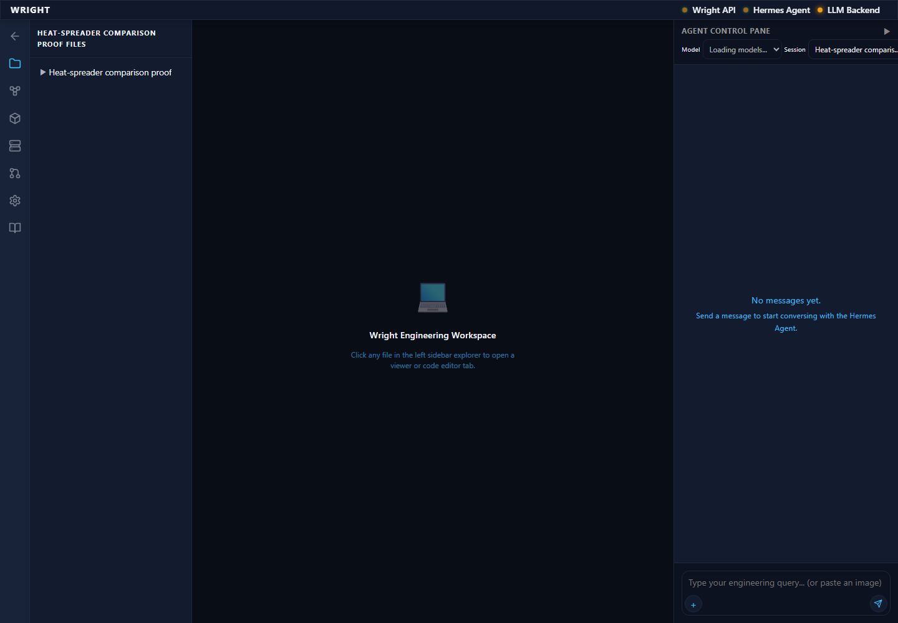
annotated 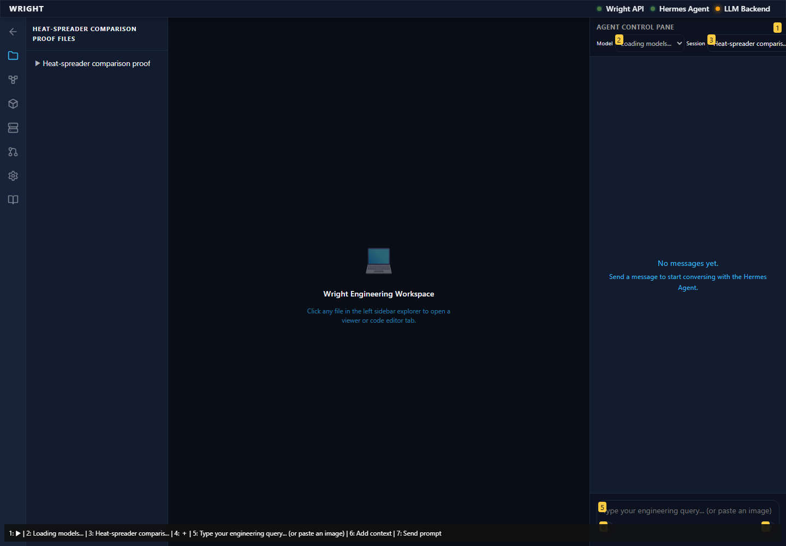
The established workflow editor is available inside the workspace.
Expected: Editor and working-view action appear.
Actual: Editor and working-view action visible.
raw 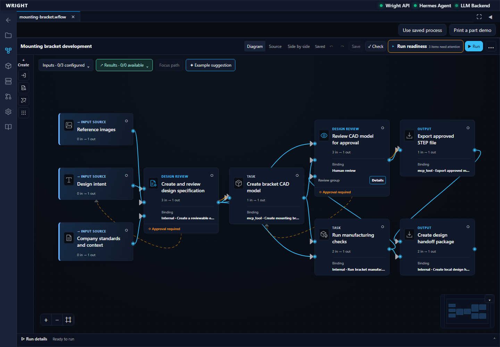
annotated 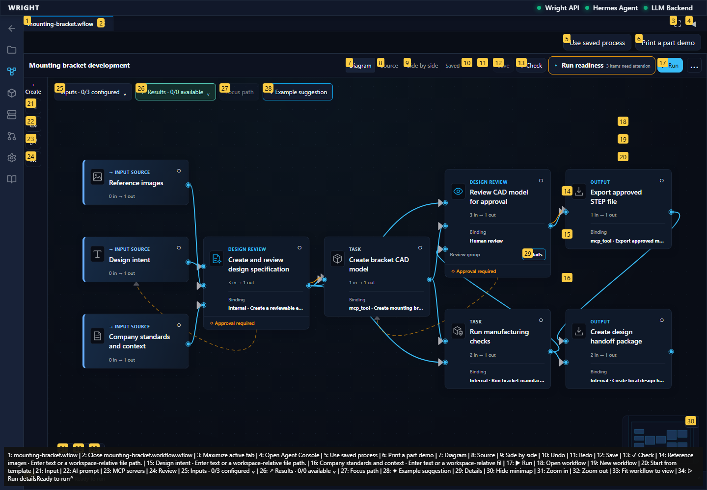
The workspace offers named saved workflows.
Expected: Open workflow is offered.
Actual: Existing file actions are visible.
raw 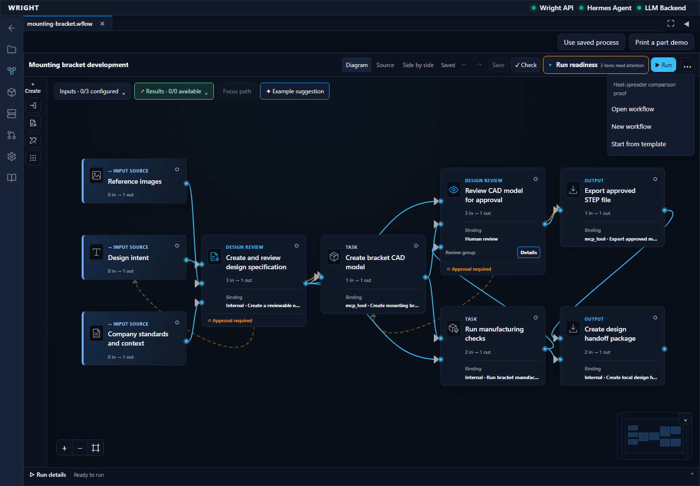
annotated 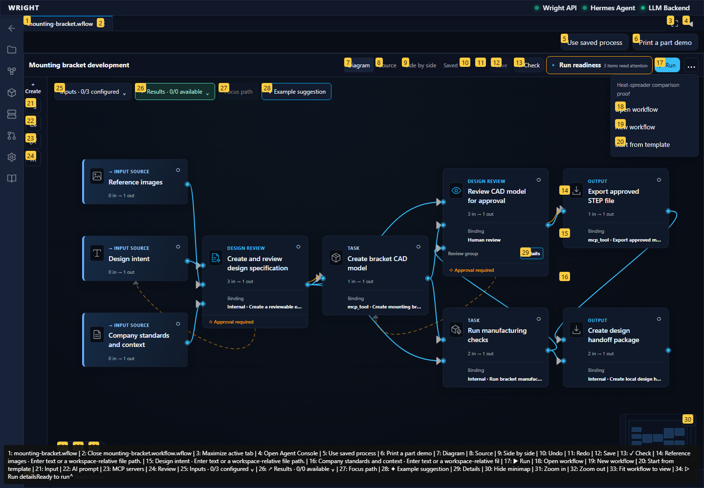
The exact accepted heat workflow appears in the saved files.
Expected: The accepted heat workflow is listed.
Actual: Exact accepted workflow choice visible.
raw 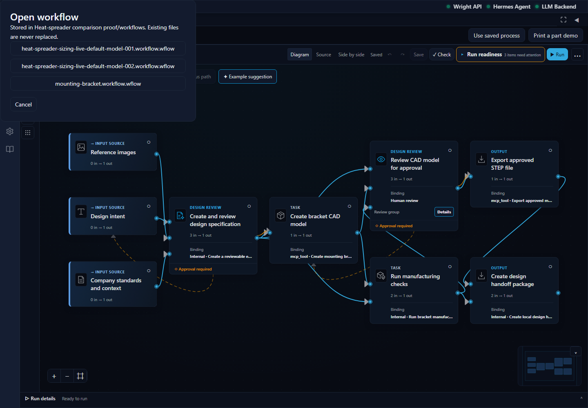
annotated 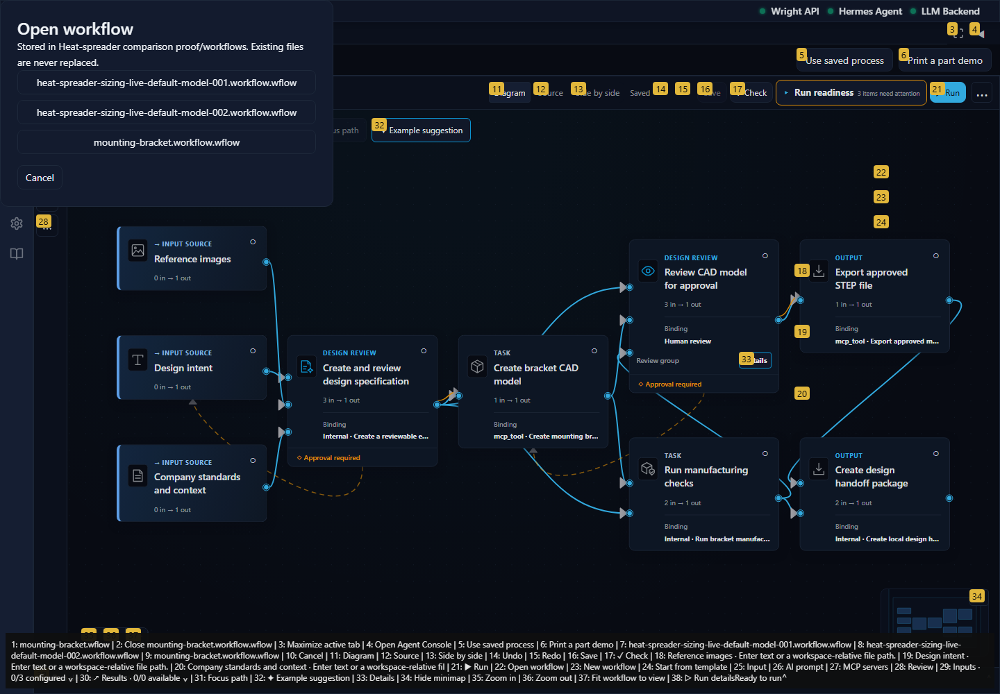
The original heat assignment opens with its connected review, CAD and analysis stages.
Expected: Accepted heat diagram and working view action available.
Actual: Exact saved heat source is open.
raw 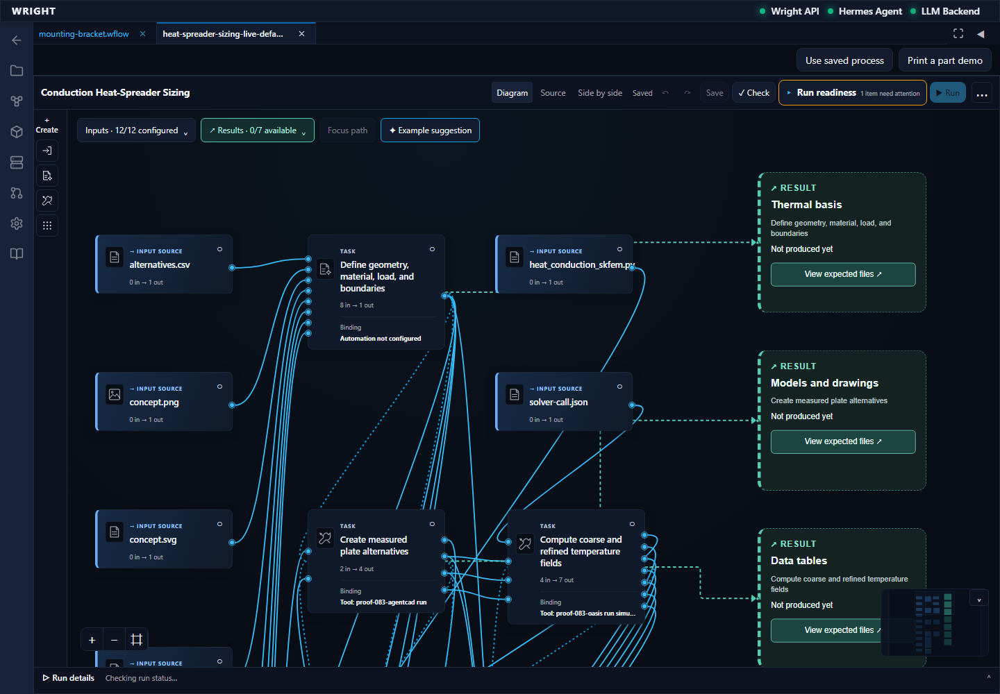
annotated 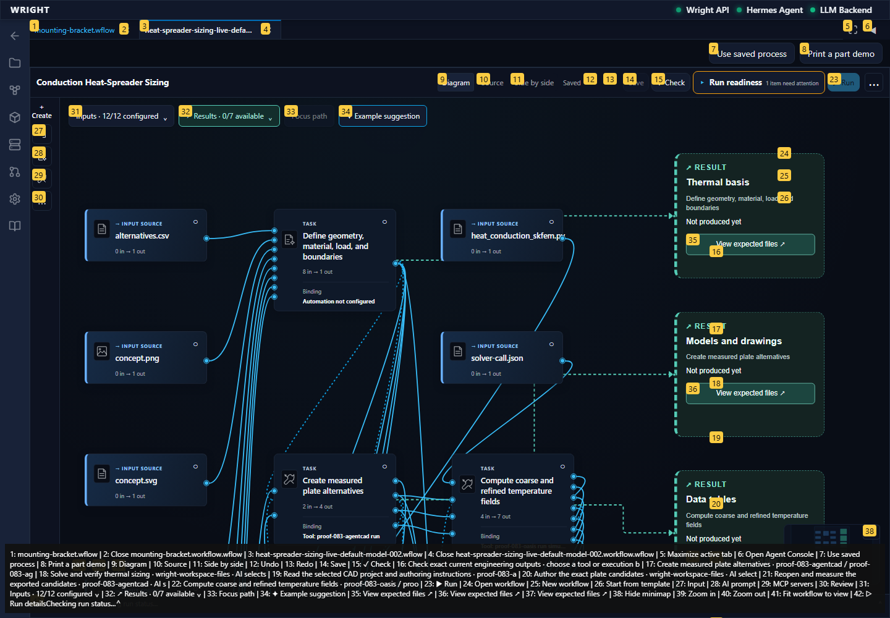
The process working interface opens in another Wright workspace tab.
Expected: Common working view in a workspace tab.
Actual: Common working view visible.
The working view reads the same isolated backend run.
Expected: The common working view attaches without starting another run.
Actual: Existing heat run attached.
annotated 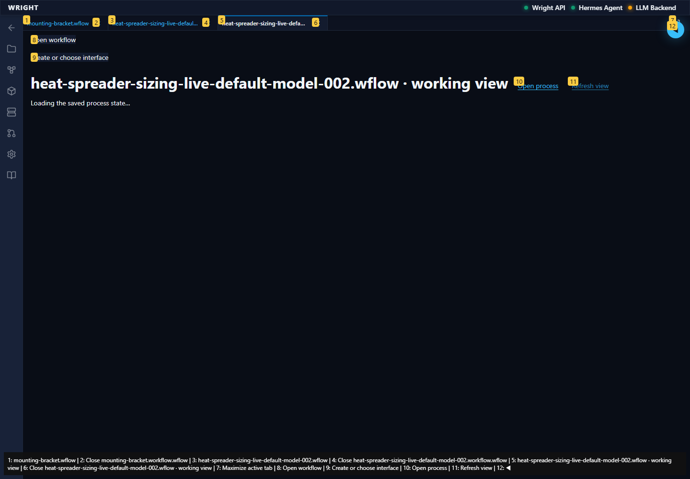
The working view exposes all eighteen recorded engineering outputs and the held assessment.
Expected: Eighteen actual CAD, solver and assessment outputs.
Actual: All eighteen exact results are visible.
annotated 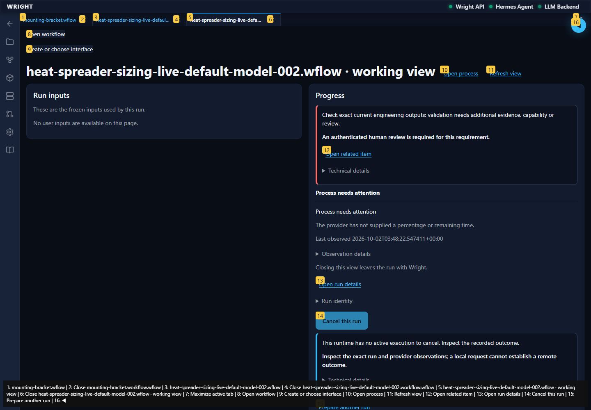
The fine-grid temperature field opens as the exact CSV table.
Expected: Actual numerical rows and temperature column.
Actual: The exact CSV numerical table is rendered.
annotated 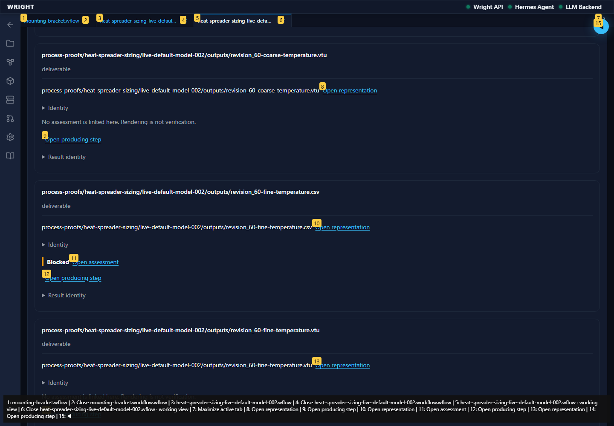
The numerical view projects all 765 supplied fine-grid samples on explicitly selected axes.
Expected: All 765 supplied samples with numerical evidence and projection limitation.
Actual: The exact field samples are rendered; other coordinates remain in the table.
annotated 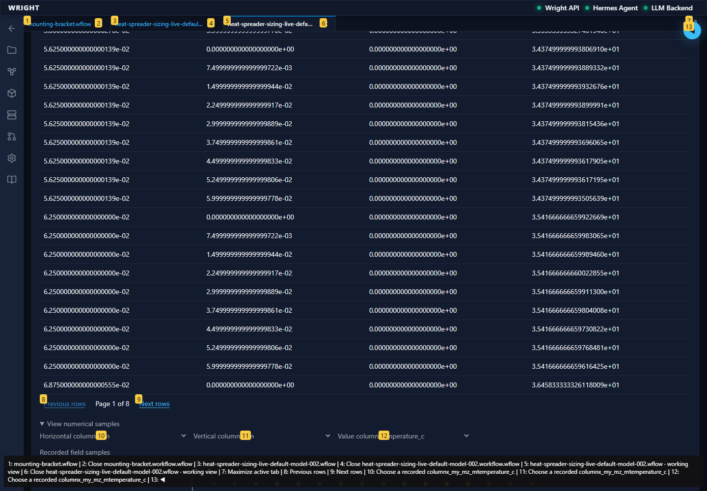
The exact current validator assessment opens from its actual field result.
Expected: Exact full assessment evidence, including 25 passed checks and one held review.
Actual: The actual recorded assessment is open.
annotated 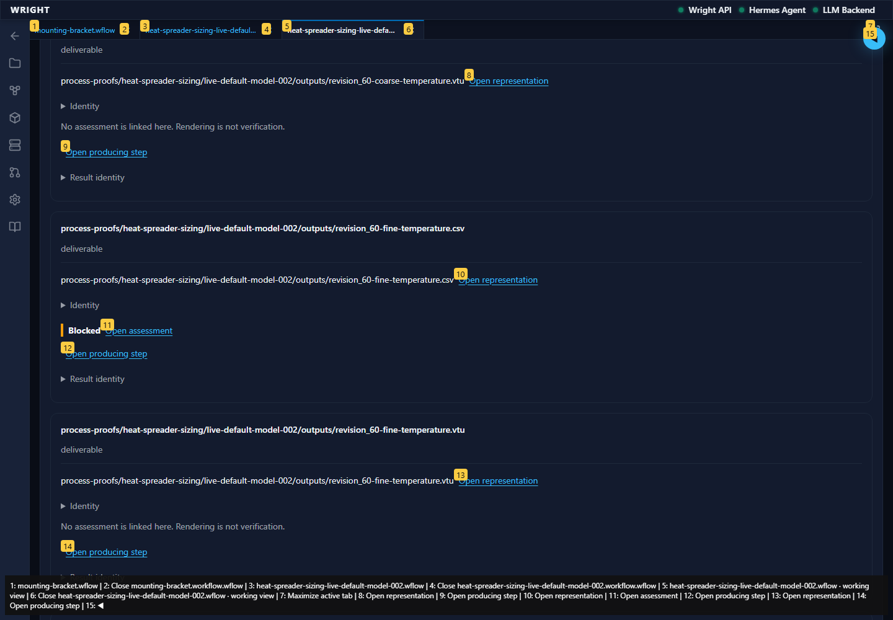
Evidence navigation retains the specific producing result even when one assessment checks several outputs.
Expected: Focus remains on the revision 60 fine-grid result.
Actual: Exact field result retains focus.